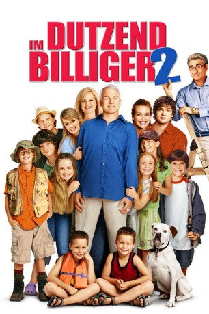

#6285 Im Dutzend billiger 2: Zwei Väter drehen durch
Alternativ: Cheaper by the Dozen 2
 
 IMDB-Wertung: 5.4 / 10
IMDB-Wertung: 5.4 / 10  Metascore: 0
Metascore: 0 
Die Bakers sind wieder zurück. Doch inzwischen sind die zwölf einst so quirligen Kids älter und somit auch etwas ruhiger geworden. Nur Papa Tom ist immer noch der Alte. Denn eigentlich hatte sich die Großfamilie ja auf einen gemütlichen Urlaub am schönen Lake Winnetka eingerichtet. Aber Tom muss sich ja unbedingt mit dem arroganten Nachbarn anlegen. Schließlich wird die Frage, wer nun eigentlich der bessere Daddy ist, beim Labour Day-Familienturnier ausgefochten - mit einem niederschmetternden Ergebnis für Tom.
Jahr: 2005
Dauer: 93 Minuten
FSK:
Land: USA Studio: 20th Century FoxTonspuren: DD5.1 - ,
Untertitel:
Auflösung: 1080p (1920x816) Größe: 8437 MB
Genre: Komödie, Abenteuer, Familie
Regisseur: Adam Shankman
Drehbuch: Patrick Massett
Soundtrack:
Darsteller:
 Steve Martin als Tom Baker
Steve Martin als Tom Baker Eugene Levy als Jimmy Murtaugh
Eugene Levy als Jimmy Murtaugh Bonnie Hunt als Kate Baker
Bonnie Hunt als Kate Baker Tom Welling als Charlie Baker
Tom Welling als Charlie Baker Piper Perabo als Nora Baker-McNulty
Piper Perabo als Nora Baker-McNulty Carmen Electra als Sarina Murtaugh
Carmen Electra als Sarina Murtaugh Jaime King als Anne Murtaugh
Jaime King als Anne Murtaugh- Hilary Duff als Lorraine Baker
 Taylor Lautner als Eliot Murtaugh
Taylor Lautner als Eliot Murtaugh Alyson Stoner als Sarah Baker
Alyson Stoner als Sarah Baker Jonathan Bennett als Bud McNulty
Jonathan Bennett als Bud McNulty- Jacob Smith als Jake Baker
 Liliana Mumy als Jessica Baker
Liliana Mumy als Jessica Baker- Morgan York als Kim Baker
 Kevin G. Schmidt als Henry Baker
Kevin G. Schmidt als Henry Baker- Forrest Landis als Mark Baker
- Brent Kinsman als Nigel Baker
- Shane Kinsman als Kyle Baker
- Blake Woodruff als Mike Baker
 Alexander Conti als Kenneth Murtaugh
Alexander Conti als Kenneth Murtaugh- Melanie Tonello als Becky Murtaugh
 Robbie Amell als Daniel Murtaugh
Robbie Amell als Daniel Murtaugh Shawn Roberts als Calvin Murtaugh
Shawn Roberts als Calvin Murtaugh Peter Keleghan als Mike Romanow
Peter Keleghan als Mike Romanow- Sam Kalilieh als Doctor
- Damon Runyan als Tennis Pro
- Matthew Knight als Theatre Kid
- Jenny Parsons als Doobner Mom
- Haylee Wanstall als Doobner Daughter
- Ely Henry als Doobner Younger Son
- Tre Smith als Security Guard
 Adam Shankman als Clam Bake Chef
Adam Shankman als Clam Bake Chef Shawn Levy als Hospital Intern
Shawn Levy als Hospital Intern Ben Falcone als Theatre Patron
Ben Falcone als Theatre Patron- Kelly Keaton als Theatre Patron
- Phillip Brock als Theatre Patron
- Juliette Goglia als Theatre Patron
- Sara Van Horn als Theatre Patron
- Nancy Daly als Theatre Patron
 Kathryn Joosten als Theatre Patron
Kathryn Joosten als Theatre Patron- Resmine Atis als Theatre Patron , uncredited
 Talia Russo als Lifeguard , uncredited
Talia Russo als Lifeguard , uncredited- Courtney Fitzpatrick als Lisa Murtaugh
- Madison Fitzpatrick als Robin Murtaugh
- William Copeland als The Commodore
- Graham Losee als Theatre Usher
- Seth Howard als Clam Bake Server
- Lee MacDougall als Doobner Dad
- Dylan Rosenthal als Doobner Older Son
- Enid Rose als Announcer at Graduation
Datei: X:\4-Tetralogie(A-K)\Im Dutzend\Im Dutzend billiger 2 Zwei Väter drehen durch (2005, FSK, 1920x816).mkv seit 01.06.2017
Festplatte: HD Collection-3(N-Z)-6(A-Z)
 Es gibt insgesamt 7 Filme in der Gruppe '4-Tetralogie(A-K)\Im Dutzend'
Es gibt insgesamt 7 Filme in der Gruppe '4-Tetralogie(A-K)\Im Dutzend'